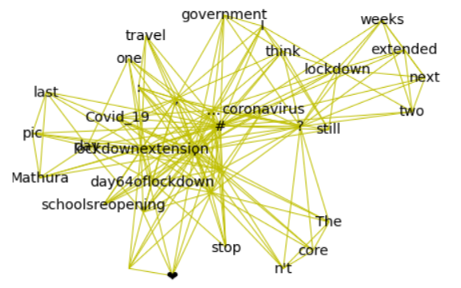

Graph-based Keyword Extraction
This project implements a Natural Language Processing model blended with graph method K-Truss/k-core truss decomposition to create a Graph Based Keyword Extractor. The keywords or keyphrases extracted are done so based on relevance or how important the word is in context of the sentence. Words of a sentence are ranked to get the most important words or keywords.
A k-truss in a graph is a subset of the graph such that every edge in the subject is supported by at least k-2 other edges that form triangles with that particular edge. A k-truss is maximal when it is not a subgraph of another k-truss. We want to find the maximal k-trusses of a graph.
First, a set of stopwords are defined. Then, the tokens in a sentence are extracted and cleaned of stopwords. These clean tokens form an initial complete graph. The edges are traversed to appropriately weigh them and the resulting weighted graphs are used to generate and order a list of keywords. The resulting subgraph of related keywords look like
Tools and Libraries used: Natural Language Toolkit(nltk), Textacy, Spacy, Torch, Keras, SKLearn, BERTTokenizer, NetworkX.
Conference Presentation: Vijaya Shetty S., Akshay S., Shritej Reddy B.S., Rakesh H., Mihir M., Shetty J. (2022) Graph-Based Keyword Extraction for Twitter Data. In: Shetty N.R., Patnaik L.M., Nagaraj H.C., Hamsavath P.N., Nalini N. (eds) Emerging Research in Computing, Information, Communication and Applications. Lecture Notes in Electrical Engineering, vol 790. Springer, Singapore. https://doi.org/10.1007/978-981-16-1342-5_68
Find code here: Github Repository-K-Truss-GraphBasedKeyword